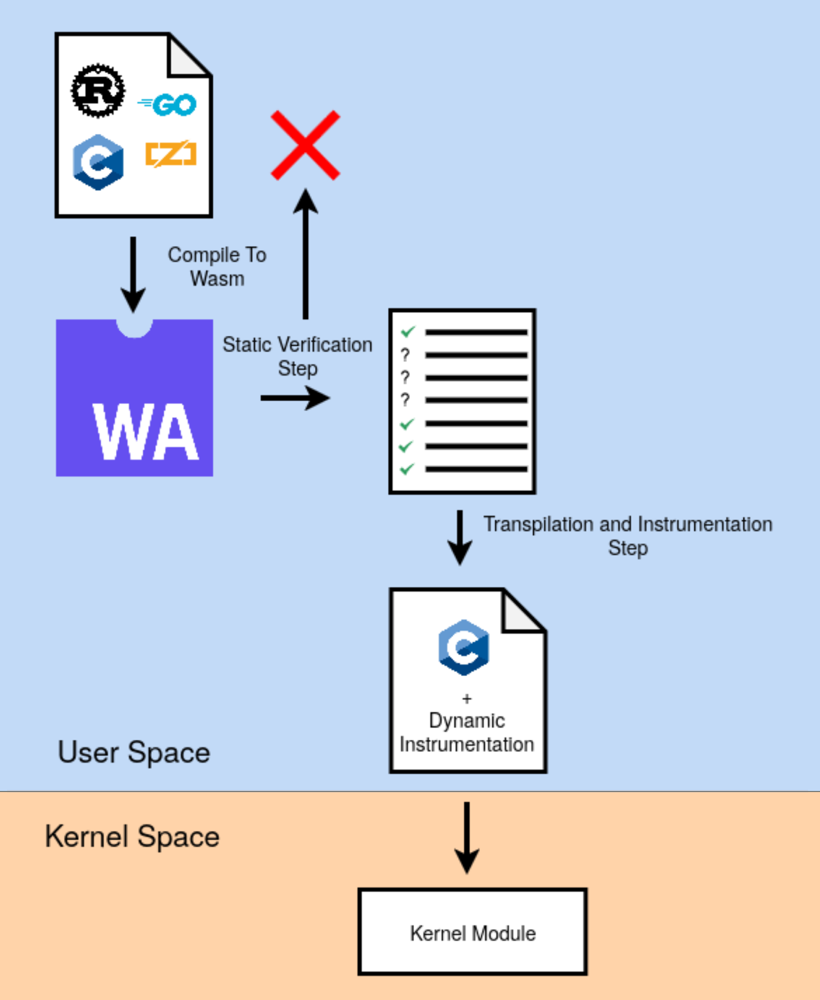
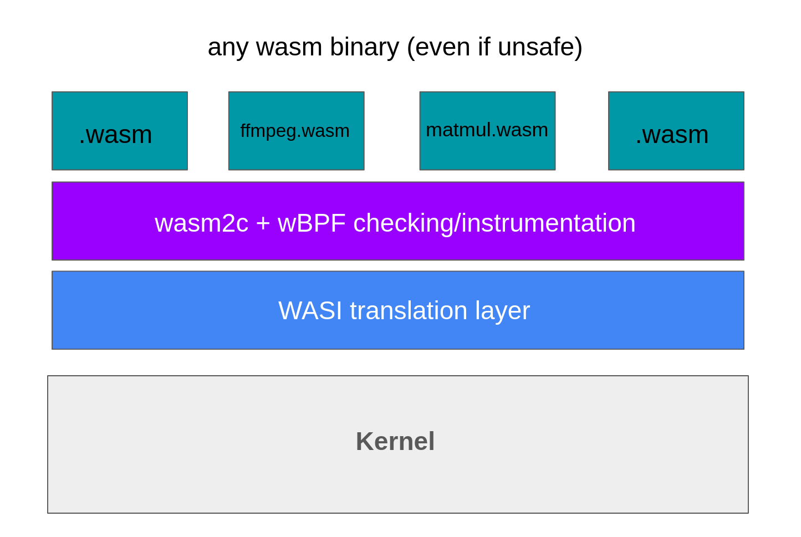

I'm a third-year undergraduate student in Computer Science at Stanford University, advised by Professor Keith Winstein.
My main interest is in computer systems. I'm particularly interested in what I call "business-casual methods" (a phrase coined by Katherine Mohr). To me, business-casual methods is an approach to systems research that combines the spirit of formal methods/programming languages theory with hands-on, low-level system building.
wBPF is a tool that I made with Max Cura, Haibib Kerim, and Ari Reid that makes programs written in arbitrary languages “safe” by using WebAssembly as an intermediary and hybridizing static analysis with dynamic instrumentation. Even after making the necessary modifications, wBPF programs run at near native speeds.

I used Rust to make a simple Raspberry Pi kernel that can run WebAssembly binaries using wasm2c and a WASI layer.
